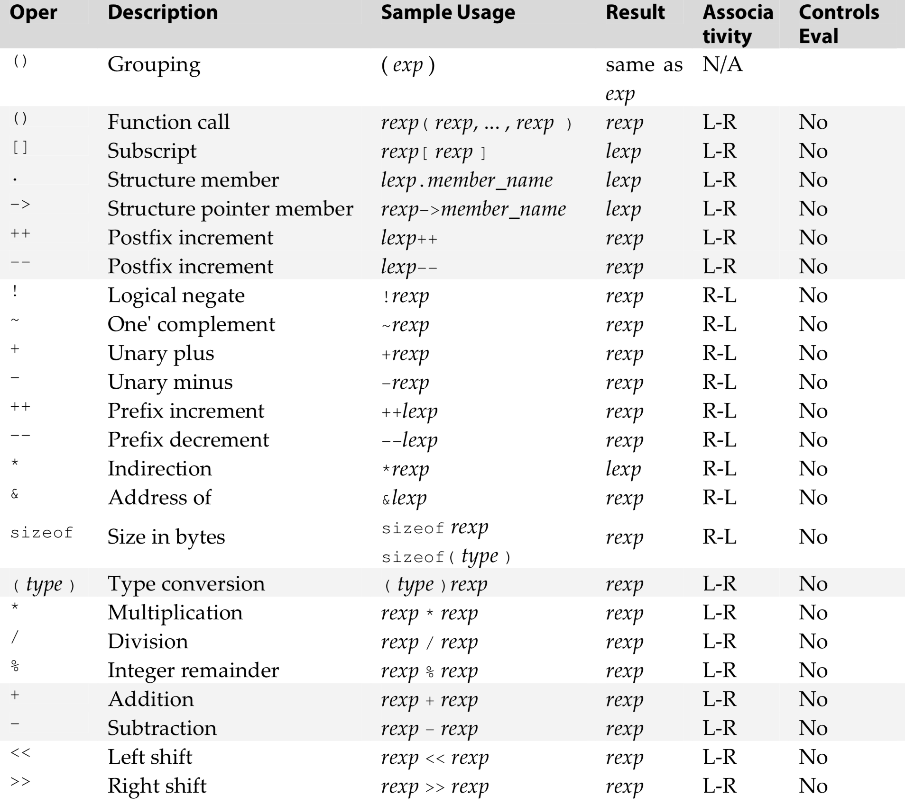
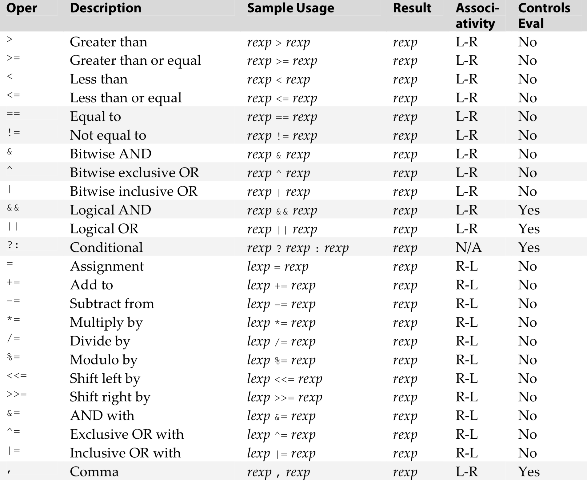

-
Memory and Addresses
computer memories = millions of bits that hold 1 or 0.
bits alone is not terribly useful, so bits are usually grouped together and treated as unit
on many modern machines, 1 byte contains 8 bits, which can store unsigned int from 0 - 255,
or signed int from -128 - 127.
each byte is identified by an address.
to store larger values, we take two or more bytes and treat them as if they were single unit.
many machines store integers in words, each composed of two or four bytes.
question: what is the advantage of 64 bit computers?
to read: Intel 64
-
Arithmetic Op
+ - * / %
they work for both int / float except for %
/ trucate the result if both numbers are integers: 5 / 2 = 2, while 5.0 / 2.0 = 2.5
printf("z=%d, f=%f", 5/2, 5.0/2.0); will print:
z=2, f=2.500000
-
Shifting
left shift = bits on the left side are discarded
0 1 1 0 1 1 0 1 << 3
0 1 1 0 1 1 0 1 0 0 0
right shift = 1. logical shift, 0s are shifted in on the left side
0 1 1 0 1 1 0 1 >> 3
0 0 0 0 1 1 0 1 1 0 1 -> discarded
2. arithmetic shift, signs are preserved and shifted in from the left
1 1 1 0 0 1 0 1 >> 3
1 1 1 1 1 1 0 0 1 0 1 -> discarded
C standard =
logical shift = apply on all unsigned values
arithmetic shift = implementation decide whether arithmetic or logical shifts are used for signed value
-
Bitwise
/*
** This function returns the number of 1-bits that appeared in
** the argument value.
*/
int
count_one_bits( unsigned value )
{
int ones;
/*
** While the value still has some 1-bits in it ...
*/
for( ones = 0; value != 0; value = value >> 1 )
/*
** If the low-order bit is a 1, count it.
*/
if( value % 2 != 0 )
ones = ones + 1;
return ones;
}
The bitwise operators are:
& | ^
Bit Manipulation
bit_number = the position of bit that you wish to operate on.
sets specified bit to one:
value = value | 1 << bit_number;
sets specified bit to zero:
value = value & ~ ( 1 << bit_number );
tests the specified bit and is nonzero if the bit is set:
value & 1 << bit_number
-
Assignment
assignment is an expression, so it is legal anywhere an expression is legal.
x = y + 3;
the assignment operator stores the value of the operand on the right to the location specified on the left.
but assignement is an expression, and expression has a value. so,
a = x = y + 3;
the value of an assignment expression is the new value of the left operand
assignment op is right to left associate, so above is equal to:
a = ( x = y + 3 );
another example: r = s + ( t = u - v ) / 3;
although it is legal, but the following are just as good:
t = u - v;
r = s + t / 3;
-
Compound Assignment
There is a compound assignment form for each of the operators presented so far:
+= -= *= /= %=
<<= >>= &= ^= |=
a += expression
it reads "add expression to a" and is equal to:
a = a + ( expression )
the difference will be obvious in certain occasions, e.g.
a[ 2 * (y - 6*f(x)) ] = a[ 2 * (y - 6*f(x)) ] + 1
a[ 2 * (y - 6*f(x)) ] += 1
the first statement will evaluate 2 * (y - 6*f(x)) twice. while the second one does it only once.
-
Unary
There are a number of unary operators, that is, operators that take only one operand. They are
! ++ - & sizeof
~ -- + * (type)
! operator = logical negation of its operand, produces an integer result, either zero or one.
int y = !5, z = !0;
printf( "y = %d, z = %dn", y, z );
will print:
y = 0, z = 1
~ operator produces the oneʹs complement of an integer‐type operand. The oneʹs complement is
obtained by changing the value of each of the operandʹs bits from one to zero or from zero to one.
- operator produces the negative of its operand.
+ operator yields the value of its operand; in other words, it does nothing.
It is provided only for symmetry with -
& produces the address of its operand
* is the indirection operator and is used with pointers to access the value being pointed to
The sizeof operator determines the size of its operand, measured in bytes
sizeof( int ) -> a type
sizeof x -> an expression
determine the size of an expression does not evaluate the expression. so,
sizeof( a = b + 1 ) does not assign anything to a.
(type) operator is called a cast and is used to explicitly convert values to another type.
++ and --
there are four versions: prefix and postfix ++; prefix and postfix --
they can only apply to L-values, expressions that can appear on the left side of an assignment op
both ++ and -- makes copy of the variable's value.
prefix version increments before copying
postfix version increments after copying
the result of the operator is not the variable itself, but a copy, so this is not legal:
++a = 10; the result of ++a is a copy of the value of a, not the var itself.
-
Relational
The operators are
> >= < <= . != ==
if( x = 5 )
do something
is perfectly legal but errorneous
-
Logical
logical operators = && and ||
a > 5 && a < 10 is perfectly fine. && has lower precedence.
it is the same as ( a > 5 ) && ( a < 10 )
procedure of evaluating the expressions in (expr1 && expr2) is called "short-circuited evaluation":
* left operand expr1 is always evaluated first.
* if the evaluation if true, then expr2 is evaluated.
* if the evaluation if false, then expr2 is never evaluated.
if (x >= 0 && x < MAX && array[ x ] == 0 )...
if subscript test passes, then array[ x ] is evaluated, and it is guaranteed to be correct.
-
Conditional
expression1 ? expression2 : expression3
it has very low precedence, for clarity sake, usually people put parentheses.
expr1 is evaluated first, if expr1 == true, expression2 is the value, and expr3 is not evalutated.
if expr1 == false, expr3 is the value, and expr2 is not evaluated.
in some conditions, conditional operator is clearer than if statements:
if ( a > 5 )
b[ 2 * c + d( e / 5 ) ] = 3;
else
b[ 2 * c + d( e / 5 ) ] = 20;
---->
b[ 2 * c + d( e / 5 ) ] = a > 5 ? 3 : 20;
-
Comma Operator
expr1, expr2, expr3, ...
the expressions are evaluated one by one, left to right
the value of the expression is the final expression in the list
the example below shows the usage of comma operator:
a = get_value();
count_value( a );
while( a > 0 ){
...
a = get_value();
count_value( a );
}
with the comma operator, you can rewrite the loop as:
while( a = get_value(), count_value( a ), a > 0 ){
}
you can also use an embedded assignment like:
while( count_value( a = get_value() ), a > 0 ){
...
}
-
Subscript, Function Call, and Structure Member
subscript operator is a pair of brackets. A subscript takes two operands: an array name and an index value
array[ subscript ] is equal to *( array + ( subscript ) )
function call operator takes one or more operands:
- the name of the function
- arguments to pass to the function
. and -> operator are used to access members of a structure.
-
Boolean Values
...0 is false, any nonzero value is true
if a variable is supposed to contain a boolean value, always set it to either 0 or 1:
positive_cash_flow = cash_balance >= 0;
if ( positive_cash_flow )
...
-
L-values and R-values
L-value = something that can appear on the left side of an equal sign
R-value = something that can appear on the right side of an equal sign
a = b + 5;
a is L-value because it identifies a place where a result can be stored.
b + 5 is an R-value because it designates a value
what about this?
b + 5 = a;
a, which was used as L-value, can be used as R-value cause every place contains a value.
however, b + 5 cannot be used as L-value cause it does not identify a place.
sounds like expression may not be a L-value, but look at subscript:
int a[30];
a[ b + 10 ] = 0;
and indirection *:
int a, *pi;
pi = &a;
*pi = 20;
both subscript and indirection specify a locatin.
different operators produce differnt L / R value as result.
the only ones that produce L-value: subscript, ".", "->", and indirection.


-
Expression Evaluation
The order of expression evaluation is determined partially by the precedence and associativity
of the operators it contains. Also, some of the expressionʹs operands may need to be converted
to other types during the evaluation
-
Implicit Type Conversions
arithmetic in C is always performed with at least the precision of the default integer type
character and short integer operands in an expression are converted to integers before being
used in the expression. These conversions are called integral promotions:
char a, b, c;
a = b + c;
b and c are promoted to integers then added. result is truncated to fit into a.
-
Arithmetic Conversions
Op on values of different types cannot proceed till one of the operands is converted to the type of other.
=================
long double
double
float
unsigned long int
long int
unsigned int
int
=================
The operand whose type is lower in the list is converted to the other operand’s type.
the code below looks perfectly fine:
int a = 5000;
int b = 25;
long c = a * b;
code works fine on machines with 32‐bit integers, but the multiplication overflows on machines with 16‐bit integers,
cause, implicit conversion brings the result back to 16-bit integers.
the solution is to convert one (or both) value to a long before multiplication:
long c = (long)a * b;
It is possible to lose precision when converting an integer to a float. Floating values are only required
to have six decimal digits of precision; if an integer that is longer than six digits is assigned to a float,
the result may be only an approximation of the integer value.
When a float is converted to an integer, the fractional part is discarded (it is not rounded). If the number is too large
to fit in an integer, the result is undefined.
-
Properties of Operators
precedence, associativity of operators controls how expressions are evaluated.
eval of two adjacent operators is determined by their precedence. if they have same precedence, the order
is determined by their associativity. otherwise, the compiler is free to evaluate expressions in any
order that does not violate the order of eval imposed by (), or comma, &&, || or ?: operators.
test.c:8:10: warning: multiple unsequenced modifications to 'aa' [-Wunsequenced]
aa = aa-- - --aa;